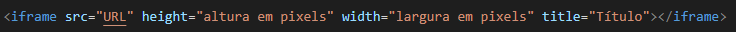
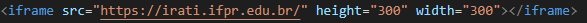
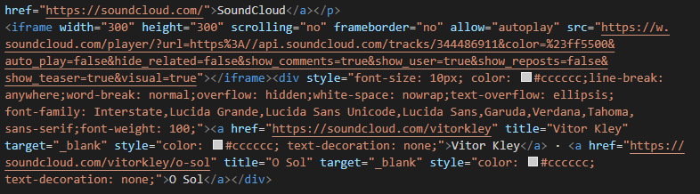
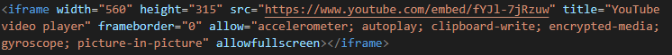
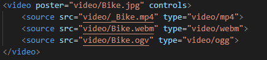
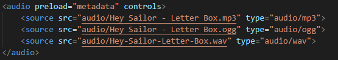
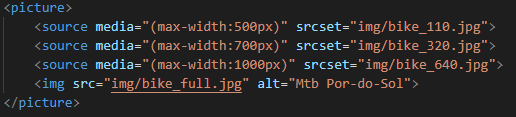

Multimídia
É uma forma de comunicação que combina diferentes formas de conteúdo, como texto, áudio, imagens, animações ou vídeo em uma única apresentação.
Incorporando Multimídias ao site
Tag iframe
A tag <iframe> é usada para incorporar outro documento ao documento HTML.
Sintaxe:
Exemplo:
Saída:
Embutir áudio em site
Para adicionar aúdio em site utiliza-se a tag iframe.
Um exemplo de site que disponibiliza músicas para serem incorporadas em documentos HTML é o SoundCloud
Exemplo:
Saída:
Incorporar vídeos ao site
Adicionar vídeos ao site também é uma maneira interessante de compartilhar conteúdo.
No exemplo abaixo, o vídeo apresentado é oriundo do YouTube
Exemplo:
Saída:
Tag vídeo
A tag <video> é usada para mostrar um vídeo em uma página da web. É possível adicionar uma foto que servirá de capa para o vídeo e, ao adicionar o vídeo à página o ideal é disponibizá-lo em diferentes formatos, pois se caso o navegador não consiga reproduzir um determinado formato terá outras opções.
Um exemplo de site com vídeos gratuitos e de licença pública é o Pexels.
Exemplo:
Saída>
Tag de áudio
A tag <audio> é usada para reproduzir um arquivo de áudio em uma página da web
O YouTube possui bibliotecas de áudio com licença pública, para ter acesso a esse recurso é necessário possuir uma conta, acessar a área YouTube Studio e em seguida clicar em Biblioteca de áudio.
Exemplo:
Saída:
Tag Picture
A tag <picture> oferece aos desenvolvedores da web mais flexibilidade na especificação de recursos de imagem.
O uso mais comum será para direção de arte em designs responsivos. Em vez de ter uma imagem que é dimensionada para cima ou para baixo com base na largura da janela de visualização, várias imagens podem ser projetadas para preencher melhor a janela de visualização do navegador.
Exemplo:
Saída: